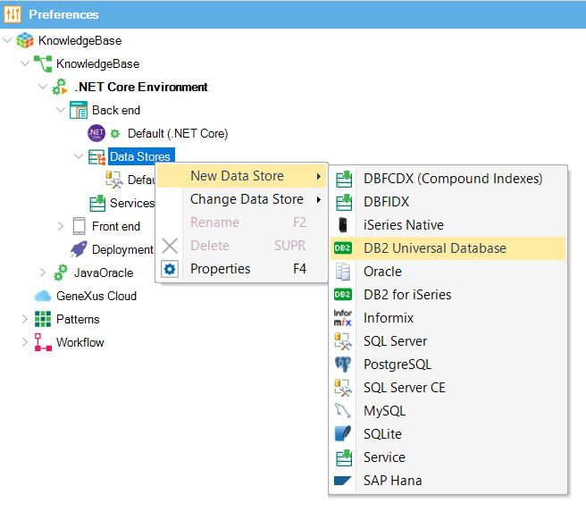
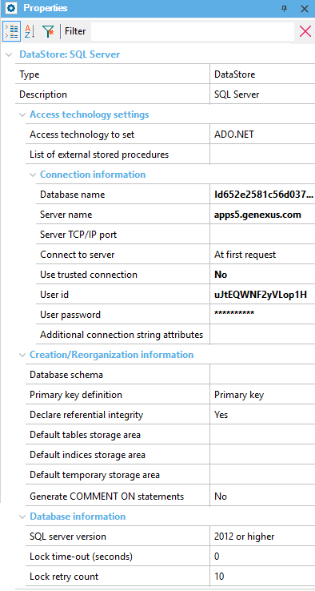

A Data Store defines the information to access a certain database (the properties of a Data Store allow you to define the connection data to the database, such as the server name, database name, user, password, version of the database, etc.). Multiple Data Stores are most commonly used for the following scenario:
So, each Environment can have a list of Data Stores defined under the Data Stores node. The first Data Store on the list is always used by default and taken into account when F5 is pressed. You can add new ones:  To change the DBMS of a certain Data Store, you have to right-click on the desired one, then click on Change Data Store and select the most suitable one. To delete a DBMS from the list created, right-click on the desired one and choose the Delete option. The default Data Store cannot be deleted; and those cross-referenced (i.e. Data Views to external databases) cannot be deleted either. Data Store PropertiesEach Data Store has a set of properties containing information about the connection, creation and/or reorganization of databases and tables, etc.  |
| Sub Categories | ||
| Category:iSeries Native Data Store Properties | Category:PostgreSQL Data Store Properties | Category:SQL Server Data Store Properties |